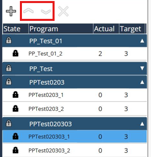
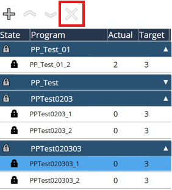

Modificación
Añadir paquetes del plan de producción
Esta función consiste en añadir los paquetes del plan de producción a la lista del plan de producción. Los archivos originales pueden estar en disco local, disco extraíble, disco de red.Se mostrarán los paquetes del plan de producción añadidos y, a continuación, se ordenarán las subtareas que pertenecen a los paquetes del plan de producción.

Bloquear/Desbloquear plan de producción

Esta función es para bloquear/desbloquear el paquete del plan de producción.Una vez importado el paquete del plan de producción, se bloqueará como su estado predeterminado.Seleccione un plan de producción y haga clic en el botón de bloqueo para desbloquearlo, lo que significa que este plan de producción pasa a ser un plan de producción activo.Una vez que el paquete del plan de producción esté activo, todos sus programas incluidos podrían procesarse uno por uno.El bloqueo/desbloqueo afecta a todo el plan de producción, no se puede configurar para un solo programa.Solo puede haber un plan de producción activo, y el que esté activo se resaltará en color oscuro.El plan de producción activo no se puede eliminar de inmediato, cualquier otra operación debe bloquear el plan de producción primero.
Ajuste de secuencia del plan de producción
Esta función sirve para ajustar la prioridad de los paquetes del plan de producción en la lista de planes de producción, con lo que se modifica la secuencia de procesamiento.Esta función se desactivará mientras se ejecuta el plan de producción.Seleccione un plan de producción y utilice este símbolo arriba/abajo para ajustar la secuencia.El superior tiene la prioridad más alta.Cada plan de producción desbloqueado se procesará en secuencia de arriba a abajo. (Función no implementada todavía)

Eliminación de un plan de producción
Esta función sirve para eliminar el paquete del plan de producción en la lista de planes de producción Seleccione un plan de producción y use este símbolo "X" para eliminar el paquete del plan de producción.Todo este paquete seleccionado se eliminará, no se permitirá eliminar un solo programa individualmente.Solo elimina el plan de producción en la lista de planes de producción, no eliminará los archivos sin procesar que se almacenan en el disco local.Esta función se desactivará mientras se ejecuta el plan de producción.
